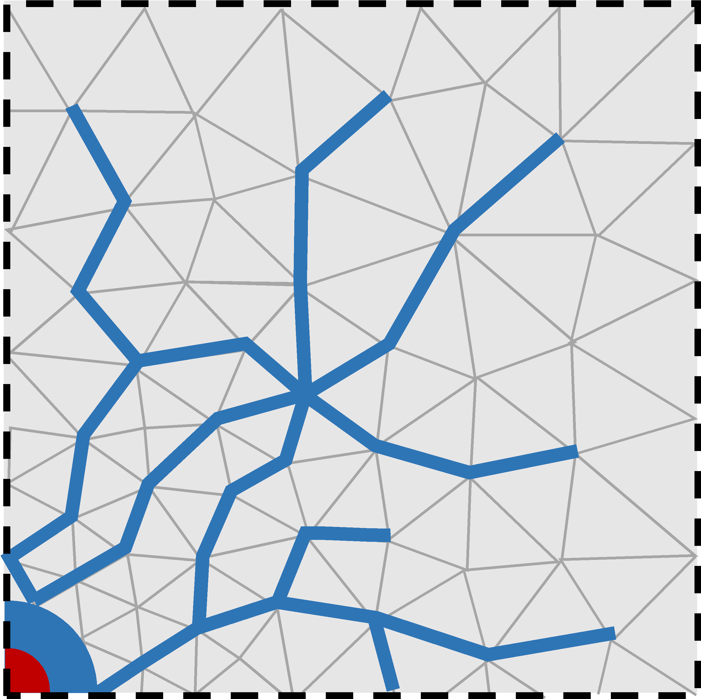
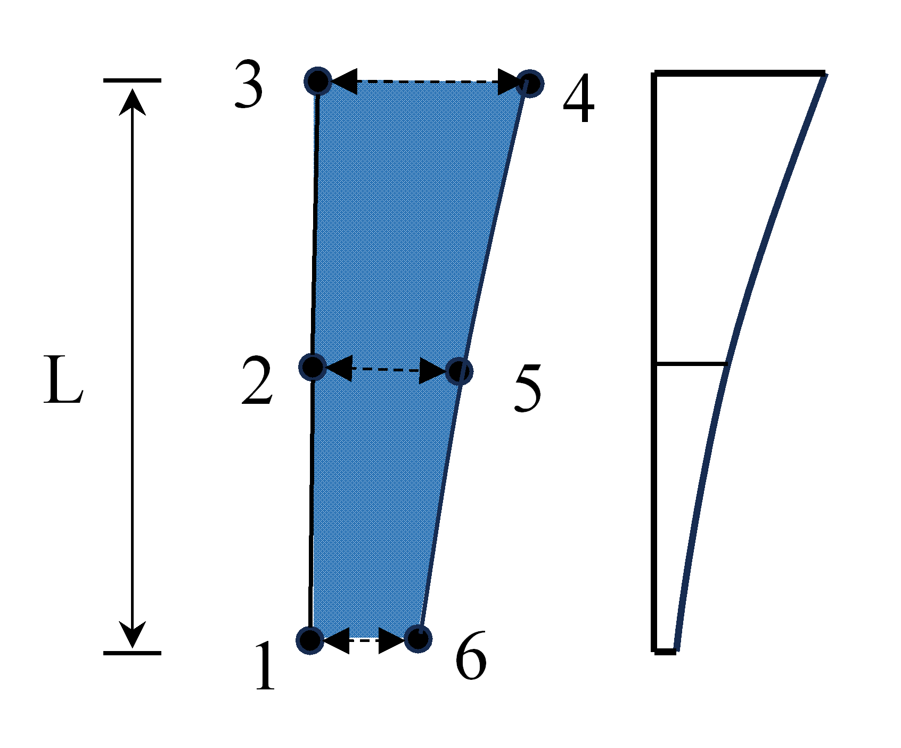
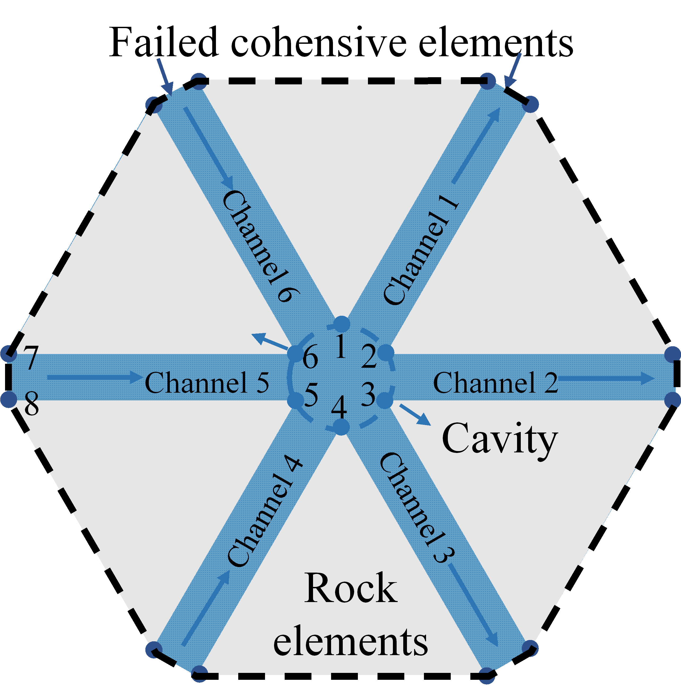
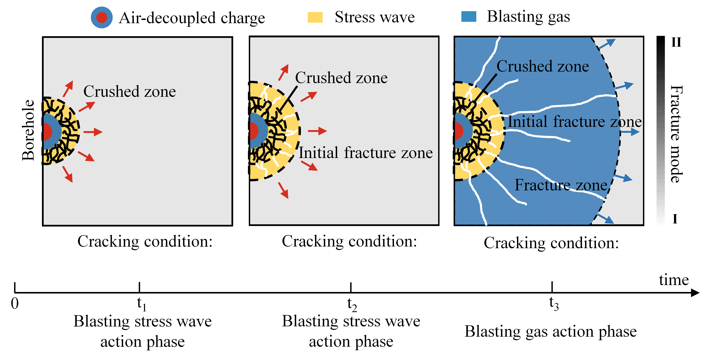
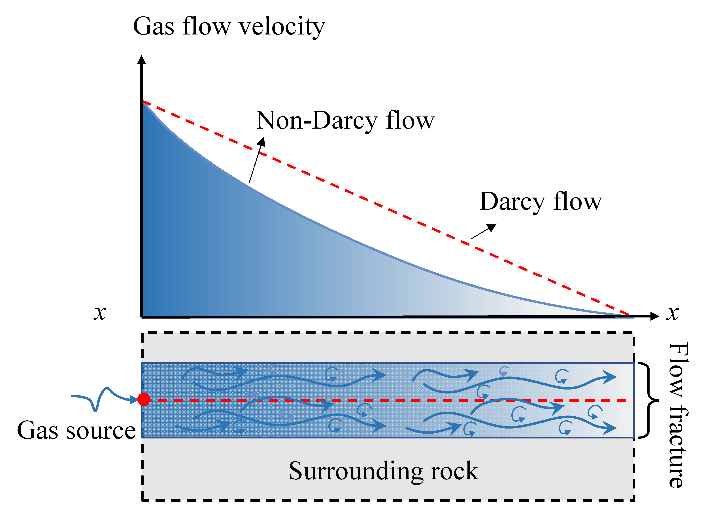
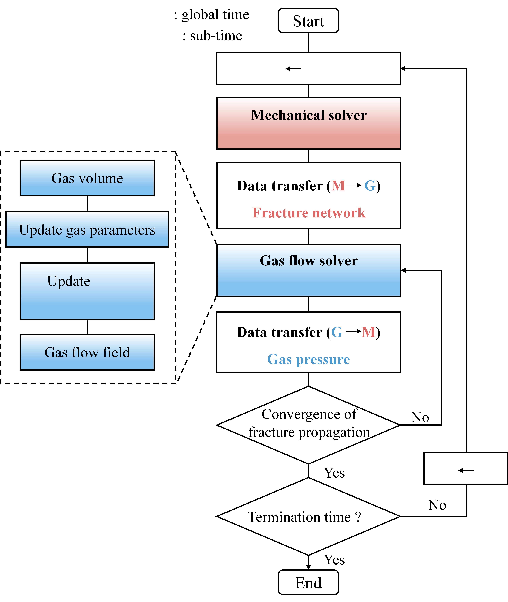

Fluid Transport#
Fracture Fluid#
When subjected to explosive loading, the rock mass experiences the rapid propagation of stress waves radiating outward from the blast hole. As the waves travel and dissipate, radial fractures form, and the blasting gas infiltrates the newly formed cracks, driving their secondary extension and ultimately giving rise to a well-connected fracture network. In OpenFDEM, the fracture geometry provides the flow domain through which the fluid (gas or liquid) travels.
Fracture aperture#
Before rock failure occurs, the fluid is assumed to be unable to penetrate the intact medium. Once the cohesive elements connecting adjacent solid elements exceed their strength limit, they separate and become failed cohesive elements. The intact rock blocks remain impermeable, so the fluid can only flow through these fracture paths. The fracture aperture of each element, which acts as the hydraulic opening, directly controls the fluid volume within the flow domain. The aperture is evaluated using
where \(a_0\) denotes the initial fracture aperture, \(a_{\max}\) and \(a_{\min}\) represent its upper and lower bounds, respectively, and \(o_n\left( n=1,2,3 \right)\) is the aperture obtained from the Gauss points along the adjacent edges shared between the fracture and neighboring solid elements.
Fracture volume#
The fluid volume within each channel is calculated as
where \(N_g\) denotes the shape function of the Gauss point, and \(a\) represents the aperture at a specific Gauss point within a channel. The fluid volume of each cavity is determined by the volumes of the channels connected to it. The total fracture volume of a cavity is obtained by aggregating the nodal fracture volumes of all cohesive elements contained within it
where \(n\) denotes the number of channels connected to the cavity, and \(M\) is half the number of nodes in a single channel.


Figure 1. Fluid flow through the fracture network formed by failed cohesive elements.#


Figure 2. Fracture unit opening and channel volume.#


Figure 3. Schematic of the flow cavity comprising Nodes 1-6.#
Porous Fluid#
Porous-fluid theory describes fluid transport through the connected pore space of a permeable solid. At the continuum scale, the pore geometry is represented by porosity and permeability rather than by resolving each pore. The formulation below is for a saturated, single-phase Newtonian fluid; it is a general porous-media model and does not imply that every coupling term is active in every OpenFDEM analysis.
Darcy flux#
For slow viscous flow through a porous medium, the volumetric Darcy flux is
where \(\mathbf{q}\) is the volume of fluid crossing unit bulk area per unit time, \(\mathbf{k}\) is the intrinsic permeability tensor, \(\mu\) is dynamic viscosity, \(p\) is pore pressure, \(\rho\) is fluid density, and \(\mathbf{g}\) is gravitational acceleration. The minus sign makes flow proceed down the hydraulic-potential gradient. For isotropic material, \(\mathbf{k}=k\mathbf{I}\). Darcy’s law assumes that inertial effects are small; high-speed flow may require a non-Darcy relation.
Mass conservation and pressure diffusion#
The local fluid mass balance is
where \(\phi\) is porosity and \(m_f\) is a mass source per unit bulk volume. For slightly compressible fluid and solid constituents, a commonly used pressure form is
where \(S_p\) is the pressure-storage coefficient, \(\alpha_B\) is the Biot coefficient, \(\varepsilon_v\) is volumetric strain, and \(Q_f\) is a volumetric fluid source. The strain term accounts for the change in pore volume caused by deformation; its sign follows the tension-positive strain convention. If deformation is not coupled, this term is omitted. Combining this balance with Darcy’s law gives the pressure diffusion equation
For constant properties, no gravity, and no deformation coupling, this reduces to a diffusion equation for pore pressure. The permeability tensor controls the ease and direction of flow, while storage controls the rate at which pressure responds to fluid injection, production, or boundary loading.
Pressure initial and boundary conditions#
A transient problem requires an initial pressure field. Typical boundary conditions prescribe pore pressure, normal fluid flux, a source or sink, or no-flow on an impermeable boundary. Prescribed pressure represents connection to a pressure-controlled reservoir; prescribed flux represents a specified injection or discharge rate. These conditions should be applied consistently with the sign convention used for \(\mathbf{q}\) and \(Q_f\).
The equations above assume a continuum representative volume and single-phase flow. The two-phase extension is presented in the next section.
Two-Phase Fluid#
Two-phase porous flow describes two immiscible fluids, such as water and gas or water and oil, sharing the same pore space. Because both phases compete for the available pores, each phase’s mobility depends on saturation. The equations below give the standard continuum formulation; they do not prescribe a particular relative-permeability curve or imply that this formulation is used by every OpenFDEM fluid solver.
Saturation and capillary pressure#
For a two-phase system, the phase saturations satisfy
where \(S_w\) and \(S_n\) are the wetting- and non-wetting-phase saturations. Capillary pressure is the pressure difference between the phases, conventionally defined as
where \(p_w\) and \(p_n\) are the wetting- and non-wetting-phase pressures. A constitutive relation \(p_c(S_w)\) closes the pressure- saturation relation and reflects pore-scale interface and wettability effects.
Phase-specific Darcy law and mass balance#
The Darcy flux for phase \(\alpha\in\{w,n\}\) is
where \(\mathbf{k}\) is the absolute permeability tensor, \(k_{r\alpha}\) is the dimensionless relative permeability, \(\mu_\alpha\) and \(\rho_\alpha\) are phase viscosity and density, and \(\mathbf{g}\) is gravity. The phase mass balances are
where \(\phi\) is porosity and \(m_\alpha\) is a mass source per unit bulk volume for that phase. These balances are coupled through the saturation constraint, the capillary-pressure relation, and the relative-permeability functions.
Relative permeability and closure#
Relative permeability accounts macroscopically for the reduction in a phase’s conducting pore space due to the presence of the other phase. It usually varies between zero and one and is specified as a function of saturation, often together with residual saturations. One illustrative Corey-type closure uses the effective wetting saturation
where \(S_{wr}\) and \(S_{nr}\) are residual wetting- and non-wetting-phase saturations, and \(n_w,n_n\) are empirical exponents. This is an example, not a universal law: measured or calibrated capillary-pressure and relative-permeability curves should be used when available. Hysteresis, compressibility, dissolution, and dynamic interfacial effects require additional constitutive assumptions.
Model limits#
If capillary effects are negligible, the phase pressures may be approximated as equal; if one phase is absent, the model reduces to single-phase flow. Saturation fronts can be sharp, so the predicted solution may depend on constitutive curves, mesh resolution, and time-step selection. The choice of primary unknowns (for example, one phase pressure and one saturation) is a numerical formulation decision and does not change the underlying conservation laws.
Gas Flow#
To reproduce the coupled fracturing behavior driven by blasting gas with high fidelity, OpenFDEM provides a compressible gas-solid coupling model based on FDEM. The blasting gas is assumed to obey the ideal gas equation of state. At each time step, the gas volume at different locations along the fractures is computed, allowing the gas density and bulk modulus to be updated. The gas pressure field is then transferred to the mechanical module to compute the fracture propagation at the next time step, and the updated fracture geometry is subsequently used for the next gas-flow calculation. The definition of the fracture aperture and volume is described in the preceding fracture-fluid section.


Figure 1. Development of the blast-induced fracture network: from stress wave loading to gas-driven secondary fracture extension.#
Compressible gas flow model#
The velocity of blasting gas can reach the order of hundreds of meters per second, and the fracture aperture can be estimated to range from \(10^{-6}\) to \(10^{-4}\) m. The Reynolds number can then be calculated using
where \(\rho\) is the fluid density, \(v\) is the gas velocity, \(a\) is the fracture aperture, and \(\mu\) is the dynamic viscosity. The Reynolds number of blasting gas flowing through blast-induced fractures can be preliminarily estimated to range from approximately 10 to 1000. When \(\mathrm{Re}\) exceeds 1, inertial effects must be considered, meaning that the Forchheimer model should be adopted and the conventional Darcy flow model is no longer applicable.
The flow of blasting gas within rock fractures satisfies the principle of mass conservation
where \(\mathbf{q}_g\) is the gas velocity vector and \(\rho _g\) is the gas density. Integrating over any control volume \(V_i\) and its control boundary \(\varGamma _i\) yields
where \(\mathbf{n}\) is the unit vector normal to the boundary of the control volume.
For an ideal adiabatic compressible gas, the variation of density with time is pressure-dependent
where \(K_g\) is the bulk modulus of the gas. Combining the volume and boundary integral terms, the discrete pressure equation for the control volume \(V_i\) becomes
where \(Q_{i}^{total}\) is the total flow rate within the control volume, from which the gas pressure can be determined.
Because the velocity of blasting gas is relatively high, the pressure gradient term and the velocity term in Darcy’s law exhibit a nonlinear dependence. Forchheimer introduced an empirical constant \(\beta\) to account for this nonlinearity caused by inertial effects
where \(\mathrm{k}_i\) is the gas permeability coefficient, \(k_g\) is the gas permeability, and \(\beta\) characterizes the influence of the inertial effects. The parameter \(\beta\) is expressed as
where \(D_{\mathrm{h}}=2a\) is the hydraulic diameter, \(\xi\) is the peak penetration height, and \(\lambda\) and \(\eta\) are two empirical coefficients, taken as 0.022 and 2/3, respectively. Based on Eq. 6, the gas velocity between any fracture element node \(i\) in one cavity and its corresponding node \(j\) in an adjacent cavity can be expressed as
where \(\varDelta p_g\) is the gas pressure difference between cavity \(i\) and cavity \(j\), calculated from the previous time step, and \(L\) is the length of the fracture element.


Figure 2. Non-Darcy gas flow: comparison of the gas flow velocity between the Forchheimer (non-Darcy) and Darcy models.#
Gas equation of state#
During the ideal adiabatic compressible gas flow, compressibility must be taken into account. Unlike liquids, which are nearly incompressible, the density of the gas changes significantly with pressure. Both density and bulk modulus vary with pressure. According to the equation of state for an ideal adiabatic gas, the gas density \(\rho _g\) and bulk modulus \(K_g\) are given by
where \(\rho _0\) is the initial gas density, \(p_g\) is the current gas pressure in the cavity, and \(\gamma\) is the adiabatic index of the gas. In this study, the adiabatic index of the blasting gas is approximated by that of air, \(\gamma=1.4\).
Gas-solid coupling#
Following the determination of gas pressures for all cavities within the computational domain, the gas pressure \(\sigma _g\) acting on each adjacent solid element is calculated. Defining the mass flow rate as \(m_t=q_g\left( x \right) \rho \left( x \right) A_e\), the flow equation can be written as
where \(p_{c,in}\) and \(\rho _{c,in}\) represent the gas pressure and density at the inlet cavity, respectively. Integrating this equation yields the gas pressure distribution along each fracture element
Once the pressure distribution along the parallel plate is obtained, the virtual work principle is applied to equivalently assign the pressure to the nodes of the fracture element, yielding the nodal force
where \(\mathbf{n}\) is the normal vector of the element surface subjected to the gas action, \(S_e\) is the area of that surface, and \(\mathbf{N}(x)\) is the shape function matrix of the element.
The gas-mechanical coupling is achieved by alternately advancing the time steps between the mechanical solver and the gas-pressure solver, realizing a fully bidirectional coupling. The mechanical solver computes the deformation, fracturing and interaction of the rock mass. The gas flow solver then captures the change in cavity volume caused by fracture propagation, elastic deformation and gas compressibility, recalculates the gas density and bulk modulus, and determines the gas pressure, which is applied back to the mechanical solver as an external load.


Figure 3. Interaction between the mechanical solver and the gas flow solver.#
Critical time step of the coupling#
Both the mechanical and gas solvers employ an explicit time integration scheme. The critical time step of the mechanical solver, required to ensure numerical stability, can be estimated as
where \(h_{\min}\) is the minimum width of the solid element, \(\lambda\) and \(\mu\) are the Lamé constants, and \(\rho\) is the material density. The critical time step for the gas solver is given by
where \(k_{g,i}\) is the permeability, \(\mu _g\) is the dynamic viscosity of the fluid, and \(K_g\) is the gas bulk modulus. Because the critical time step for transient flow can be very restrictive, a sub-cycling strategy is adopted, in which each mechanical time-step loop contains multiple gas-calculation sub-cycles. After the gas flow solver completes the specified number of sub-cycles, the gas pressure from the final sub-cycle is passed to the mechanical solver, which then proceeds to the next mechanical time step.